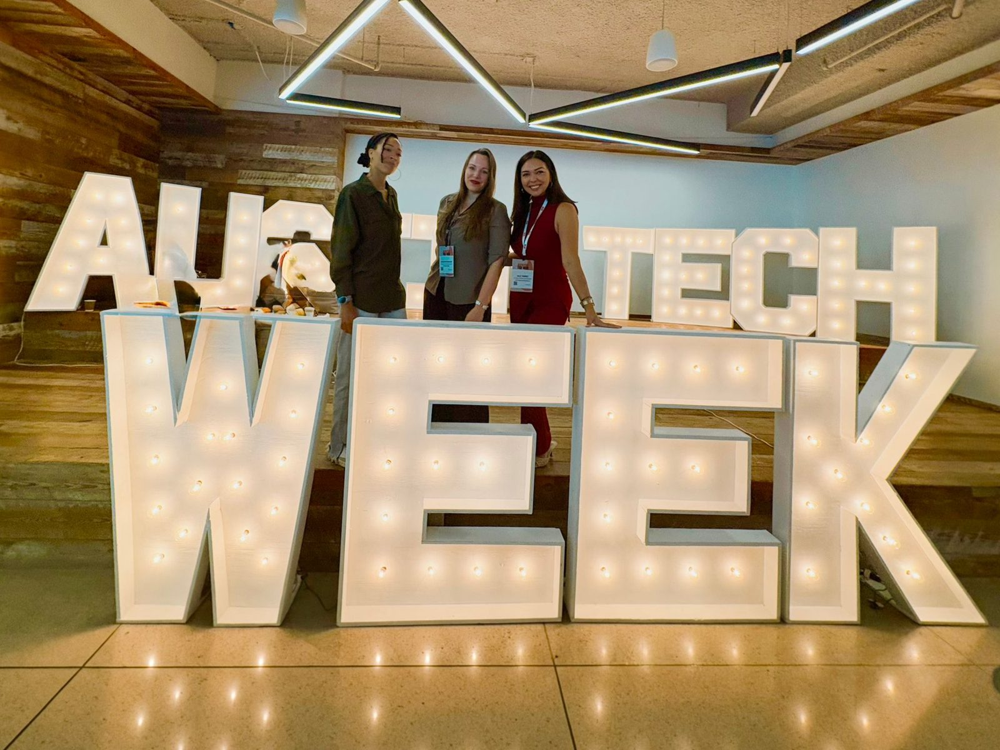
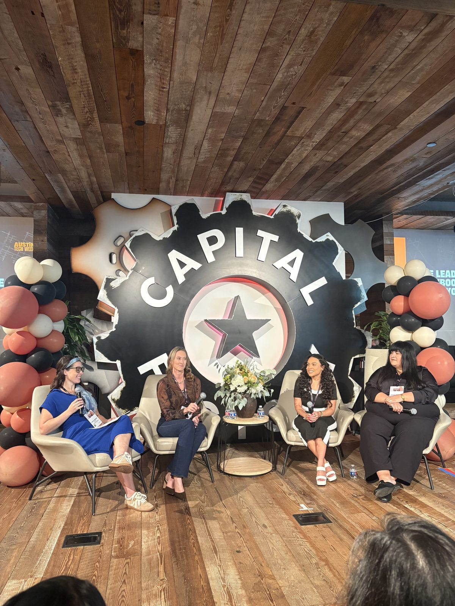

A week full of open doors
This past week at Austin Tech Week, I walked into rooms full of strangers and walked out with a community. I met founders building brave new things, operators solving intricate problems, and neighbors in this city who show up for each other simply because they can.

What struck me most was the generosity. Every conversation came with an offer: an introduction, a resource, a story about what worked and what flopped. These were people who measure success by how many others they lift along the way.
Community is a learning accelerator
Think of a forest. A single tree can grow on its own, slowly. In a forest, roots connect underground and pass nutrients to whoever needs them most. The young trees grow faster because the older ones share what they have gathered.
That is what a good community does for learning. You borrow someone else's hard won lessons and skip a year of trial and error. You hear a question you never thought to ask. You see a version of what is possible, and suddenly your own ceiling rises.

Learning from the women on stage at Capital Factory.
We become like the people we spend time with. So choose people who are curious, generous, and building toward something bigger than themselves.
Tuning back to my own frequency
The right community works like a tuning fork. When you stand near something that resonates clearly, you start to hum in your own true note.
That is how this week felt. Being around people who build with purpose propelled me to search deeper and ask better questions about my own path. Where does my curiosity want to go next? How do I use what I know to serve others well?
My mother always said, "El que no vive para servir, no sirve para vivir." Austin Tech Week reminded me that service and innovation belong together. The most fabulous builders I met were also the most generous.
Your turn
So here is my invitation. Look around at the people you learn from. Who sharpens your thinking? Who makes you braver just by being in the room?
Then go find more of them. Say yes to the meetup, send the follow up note, buy someone a coffee and ask about their story. Community is built one generous conversation at a time.
Thank you, Austin. I left this week lighter, fuller, and more myself.